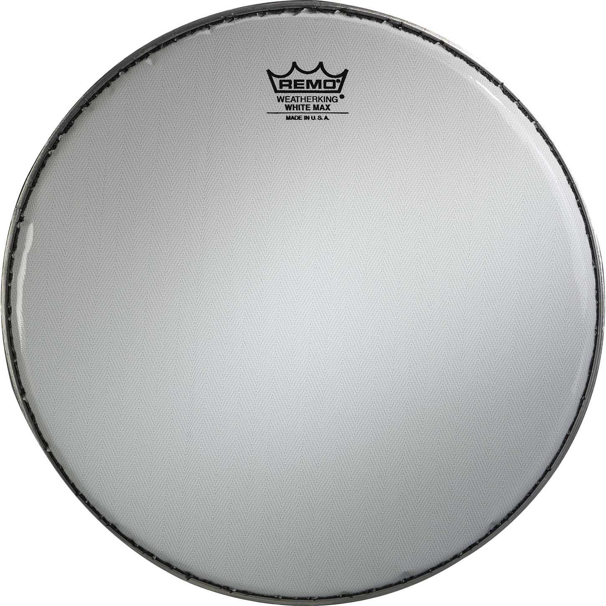
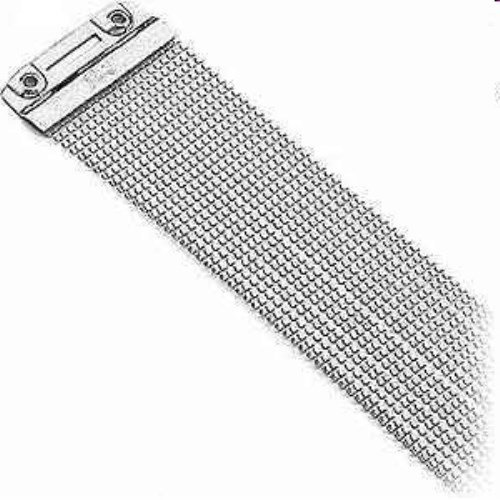
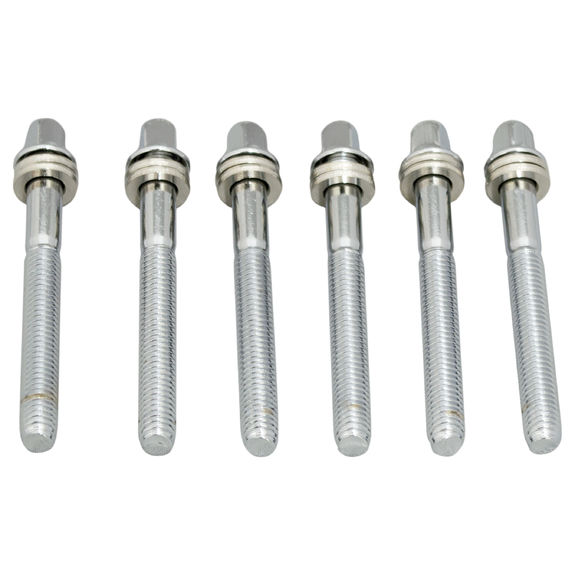
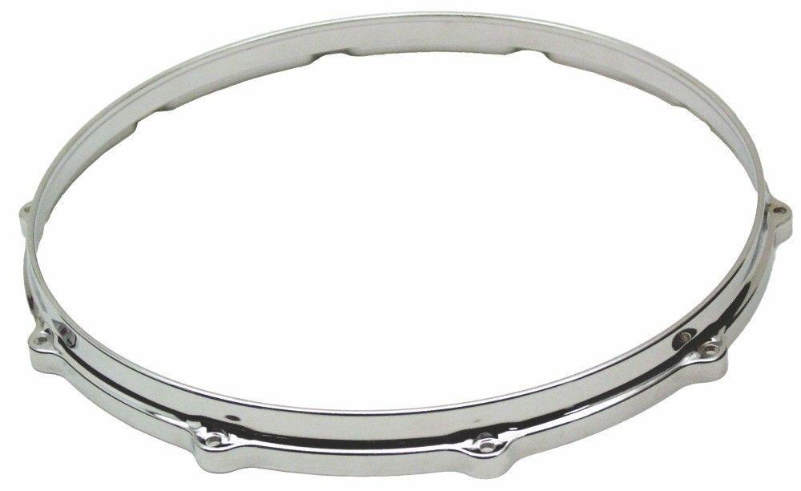
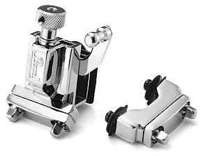
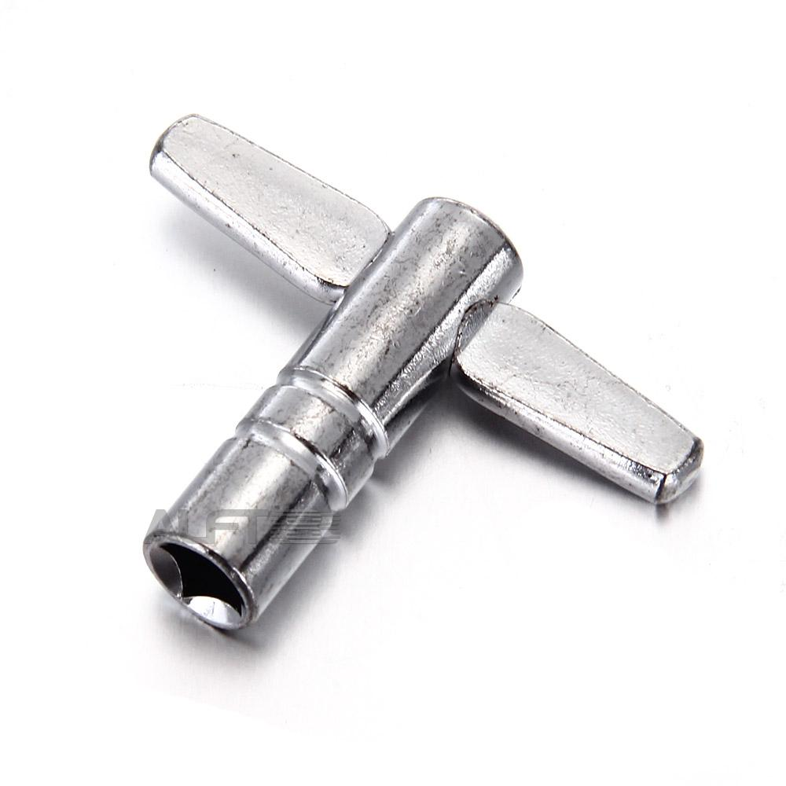

| Head: The part that is hit with the drum stick | Snare Wires:The wires sit along the bottom of the drum and effects what the drum will sound like | Tension Rods:The rods are tightened by a little key, it either loosens or tightens and keeps the top and bottom head together on the drum |
|       | Drum Hoops:The hoops are used to hold everything together, the rods, the heads, the wires, even the throw off | |
|
Throw offs:Throw offs are used to release the strain on the snares
Drum Key:The key is used to change the tone of a Snare Drum. The tension rods are twisted with the key and the drum makes different sounds |
||